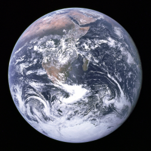

Earth is the third planet in our solar system and is probably the planet we're most familiar with because it is the planet we live on. Even though it is the planet we live on, we might not know as much about it, but no worries, this is what Planets.com is for. First off, Earth is the only planet in the whole solar system that is able to sustain life on it, mainly because it has all the sustainable needs for all living things, including water and oxygen. Earth is 149.6 million km away from the sun and takes 365.25 days for it to complete its full orbit around the sun. Unlike any of the other planets, Earth was not named after and Greek or Roman god or goddess, but instead is referred as "the world" by the words of Greek; "Taῖa" and in Latin; "Terra," and has the symbol ♁. Ranking 5th largest planet in the solar system with a total volume of 1.08321×1012 km3 and weighing 5.97237×1024 kg, we can be pretty proud of our home planet. Since we live on Earth, gravity here seems normal to us because that's what most of us can even experience, which is 9.807 m/s2. Earth by far has the most visible colours from space and on the surface, we're cover with blue oceans, white clouds, red-brown pieces of land, and that's just what you see from space! On average, the temperature is 288K or 15℃, with the coldest at 184K near our poles and the max at 330K.

Wikipedia, The Free Encyclopedia. (September 25, 2016) Earth. Retrieved September 25, 2016, from https://en.wikipedia.org/wiki/Earth
Digital Image: Earth, ~https://upload.wikimedia.org/wikipedia/commons/thumb/9/97/The_Earth_seen_from_Apollo_17.jpg/260px-The_Earth_seen_from_Apollo_17.jpg~ Retrieved September 25, 2016.
Digital Image: Earth Rotating, ~https://upload.wikimedia.org/wikipedia/commons/thumb/4/44/EpicEarth-Globespin%282016May29%29.gif/220px-EpicEarth-Globespin%282016May29%29.gif~ Retrieved September 25, 2016.